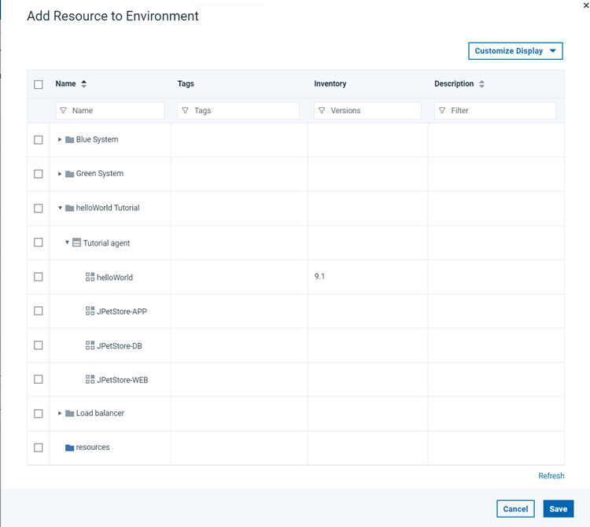

You can specify where components are deployed by adding a resource or resource group to
the environment. Then, map the components to those resources.
About this task
Resources and resource groups identify the agents that do
the work of deploying components and provide other configuration information.
You must identify the resources for the environment and then specify
which components run on which resources.If you are using IBM® WebSphere® Application Server,
you can import information from cells as resources; see Importing resources from WebSphere Application Server.
Procedure
-
To open the environment, click .
-
Click Add Base Resources to display the Add Resource to
Environment window for the selected environment.
All previously defined resources are available for use, as shown in the following
figure:

-
Select the check box that is associated with the resource or resource group to use.
You can select more than one resource. Selecting a resource that was previously added to the
environment has no effect. Adding more than 10 base resources in an environment may result in
performance issues.
- Click OK. The selected resource
or resource group is added to the environment.
-
To remove a base resource from the environment, in the same row as the resource, click .
Removing a base resource removes its child resources as well. Starting from v7.0.5.1, you can
delete a resource from the environment. Note that deleting a resource from the environment
resource tree deletes the resource from the system. Delete a resource from the system as
follows:
- Go to .
- Enable Deleting Resources from Environment Resource Tree, confirm, and save your changes.
- Go back to your environment resource tree, in the same row as the resource, click .
- Map each component in the application to the resources.
Each component must be mapped to at least one resource. You
can map the same component to multiple resources. Or to specify that
the component is deployed more than once to the environment, you can
map the component multiple times to the same resource. There are several
ways to map components to resources:
- To add components one at a time, in the same row as the resource,
click , and then select the component.
- To drag components, click . Then, in the list
of components that are associated with the application, drag one or
more components to the resource.
- To add multiple components at once, ensure that each component
has the same tag. Then, in the same row as the resource, click , and specify the tag that identifies the components.
Results
The environment is populated with resources and components.
What to do next
Note: For z/OS deployments, you must use a one-to-one (1:1) mapping
between environments and resources. This practice ensures that each resource is assigned
exclusively to a single environment within the application context.
After mapping
components and resources, create an application process. For information about creating
application processes, see Creating application processes.